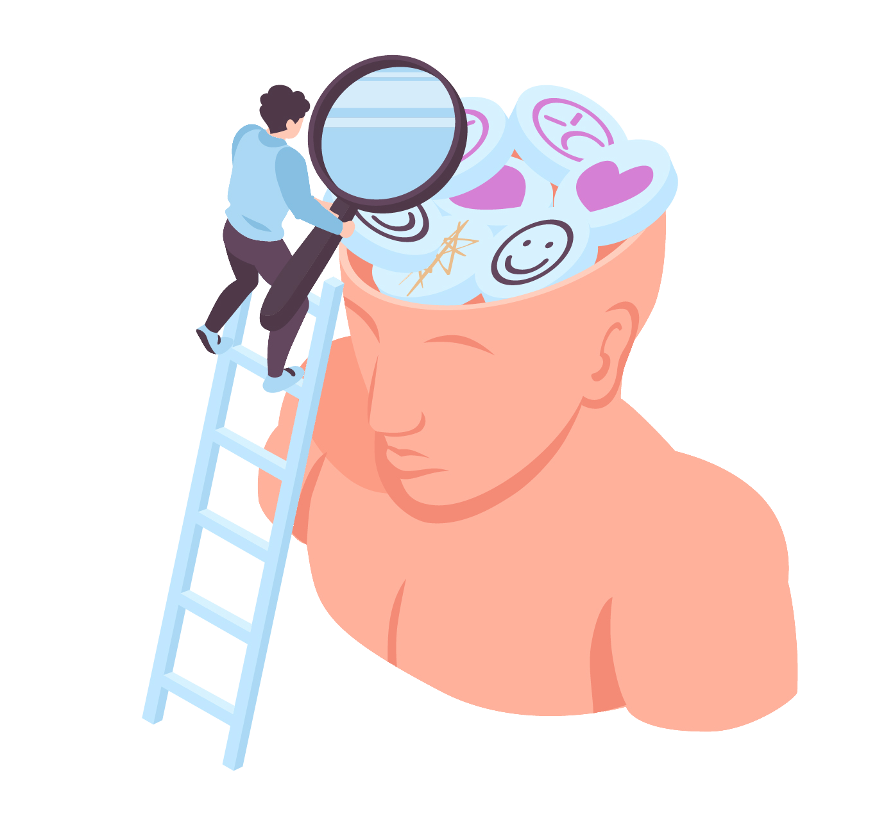
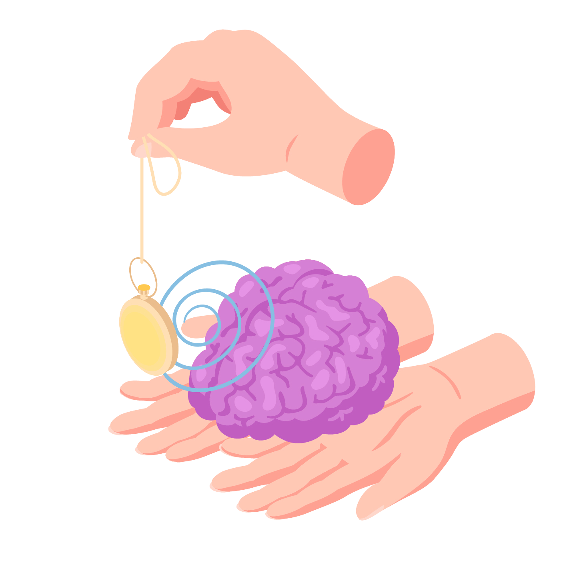

¿Quienes somos?

En un mundo en constante cambio es fundamental cuidar de nuestra salud mental y emocional. En nuestra web, encontrará un equipo de profesionales apasionados por brindar el apoyo que necesita para superar desafíos y alcanzar un bienestar psicológico óptimo. Especialistas de cada rama de la psicología buscan ayudar a quienes estén dispuestos a ser acompañados en la superación de las adversidades que la vida nos puede presentar.
Podemos ayudarte
La terapia es una herramienta valiosa que ayuda a las personas a abordar una variedad de problemas emocionales, psicológicos y de salud mental. Hay muchas razones por las cuales las personas pueden optar por hacer terapia, problemas de salud mental, Manejo del estrés, Traumas y PTDS, mejorar el bienestar emocional, entre tantos otros casos. Es por eso que hemos decidido brindar un servicio que facilite el contacto con profesionales de la Salud Mental para llevar a cabo el tratamiento que cada uno de los pacientes requiera.
Lo importante, tu salud mental.
Nuestra misión es proporcionar un espacio seguro y confidencial donde pueda explorar sus pensamientos, emociones y preocupaciones. Ya sea que esté buscando ayuda para manejar el estrés, la ansiedad, la depresión o esté interesado en el crecimiento personal, nuestro equipo de psicólogos altamente capacitados está aquí para acompañarlo en su viaje hacia la salud mental. En nuestra plataforma, encontrará recursos informativos, evaluaciones, terapia en línea y la posibilidad de conectarse con terapeutas calificados. Estamos comprometidos a brindarle un entorno de apoyo donde pueda compartir, aprender y crecer.
Foro
No está solo, estamos acá para ayudar en cada paso que dé. Próximamente crearemos un Foro para el intercambio de ideas entre pacientes y profesionales. De esta manera, podemos aportar mejoras a la experiencia del usuario y perfeccionar nuestra asistencia online para con usted.